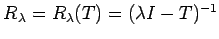
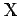
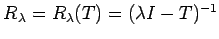
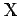

Inhalt Index DeskTop Bronstein

 Funktionalanalysis Stetige lineare Operatoren und Funktionale Elemente der Spektraltheorie linearer Operatoren
Funktionalanalysis Stetige lineare Operatoren und Funktionale Elemente der Spektraltheorie linearer Operatoren


Bei Untersuchungen zur Lösbarkeit von Gleichungen ist man bestrebt, das Problem auf die Form
Sei T ein linearer, im allgemeinen unbeschränkter Operator im BANACH-Raum  . Die Menge aller komplexen Zahlen, für die gilt, heißt Resolventenmenge und der Operator  Resolvente. Sei jetzt T ein beschränkter linearer Operator in einem komplexen BANACH-Raum . Dann gelten die Aussagen:
. Die Menge aller komplexen Zahlen, für die gilt, heißt Resolventenmenge und der Operator  Resolvente. Sei jetzt T ein beschränkter linearer Operator in einem komplexen BANACH-Raum . Dann gelten die Aussagen:
 , wenn .
, wenn .